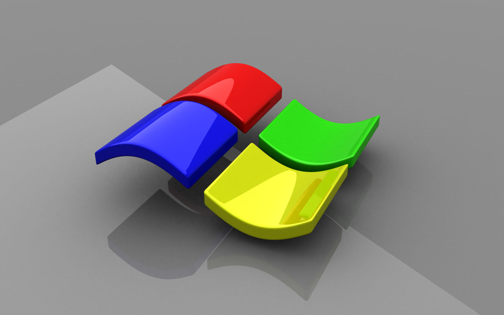

—— 我喜欢你，认真且怂，从一而终 ——
关于个人博客的建站问题解答
简介:
不管你是学前端的还是后端的，作为一个程序员，做一个自己的博客，那是必然的。咱们的圈子就这么大，想让更多的人了解你，看看你的技术多牛逼，扔一个博客地址就行了。

不管你是学前端的还是后端的，作为一个程序员，做一个自己的博客，那是必然的。咱们的圈子就这么大，想让更多的人了解你，看看你的技术多牛逼，扔一个博客地址就行了。不管你是学前端的还是后端的，作为一个程序员，做一个自己的博客，那是必然的。咱们的圈子就这么大，想让更多的人了解你，看看你的技术多牛逼，扔一个博客地址就行了。不管你是学前端的还是后端的，作为一个程序员，做一个自己的博客，那是必然的。咱们的圈子就这么大，想让更多的人了解你，看看你的技术多牛逼，扔一个博客地址就行了。不管你是学前端的还是后端的，作为一个程序员，做一个自己的博客，那是必然的。咱们的圈子就这么大，想让更多的人了解你，看看你的技术多牛逼，扔一个博客地址就行了。不管你是学前端的还是后端的，作为一个程序员，做一个自己的博客，那是必然的。咱们的圈子就这么大，想让更多的人了解你，看看你的技术多牛逼，扔一个博客地址就行了。不管你是学前端的还是后端的，作为一个程序员，做一个自己的博客，那是必然的。咱们的圈子就这么大，想让更多的人了解你，看看你的技术多牛逼，扔一个博客地址就行了。不管你是学前端的还是后端的，作为一个程序员，做一个自己的博客，那是必然的。咱们的圈子就这么大，想让更多的人了解你，看看你的技术多牛逼，扔一个博客地址就行了。不管你是学前端的还是后端的，作为一个程序员，做一个自己的博客，那是必然的。咱们的圈子就这么大，想让更多的人了解你，看看你的技术多牛逼，扔一个博客地址就行了。不管你是学前端的还是后端的，作为一个程序员，做一个自己的博客，那是必然的。咱们的圈子就这么大，想让更多的人了解你，看看你的技术多牛逼，扔一个博客地址就行了。不管你是学前端的还是后端的，作为一个程序员，做一个自己的博客，那是必然的。咱们的圈子就这么大，想让更多的人了解你，看看你的技术多牛逼，扔一个博客地址就行了。不管你是学前端的还是后端的，作为一个程序员，做一个自己的博客，那是必然的。咱们的圈子就这么大，想让更多的人了解你，看看你的技术多牛逼，扔一个博客地址就行了。不管你是学前端的还是后端的，作为一个程序员，做一个自己的博客，那是必然的。咱们的圈子就这么大，想让更多的人了解你，看看你的技术多牛逼，扔一个博客地址就行了。不管你是学前端的还是后端的，作为一个程序员，做一个自己的博客，那是必然的。咱们的圈子就这么大，想让更多的人了解你，看看你的技术多牛逼，扔一个博客地址就行了。
我是超链接
::-moz-selection {
background: #2b4d60;
color: #000;
color: #fff;
}
/*火狐浏览器*/
::-webkit-selection {
background: #2b4d60;
color: #000;
color: #fff;
}
/*谷歌*/
pre code {
font-family: consolas, Menlo, "PingFang SC", "Microsoft YaHei", monospace;
}
.hljs {
padding: 0;
background: #313842;
}
.hljs-ln td {
padding: 2px 10px;
}
/* for block of numbers */
td.hljs-ln-numbers {
text-align: center;
color: #2F7689;
background-color: #EFF2F3;
/*border-right: 0.5px solid #CCC;*/
vertical-align: top;
}
/* for block of code */
td.hljs-ln-code {
padding-left: 5px;
不管你是学前端的还是后端的，作为一个程序员，做一个自己的博客，那是必然的。咱们的圈子就这么大，想让更多的人了解你，看看你的技术多牛逼，扔一个博客地址就行了。不管你是学前端的还是后端的，作为一个程序员，做一个自己的博客，那是必然的。咱们的圈子就这么大，想让更多的人了解你，看看你的技术多牛逼，扔一个博客地址就行了。不管你是学前端的还是后端的，作为一个程序员，做一个自己的博客，那是必然的。咱们的圈子就这么大，想让更多的人了解你，看看你的技术多牛逼，扔一个博客地址就行了。不管你是学前端的还是后端的，作为一个程序员，做一个自己的博客，那是必然的。咱们的圈子就这么大，想让更多的人了解你，看看你的技术多牛逼，扔一个博客地址就行了。不管你是学前端的还是后端的，作为一个程序员，做一个自己的博客，那是必然的。咱们的圈子就这么大，想让更多的人了解你，看看你的技术多牛逼，扔一个博客地址就行了。不管你是学前端的还是后端的，作为一个程序员，做一个自己的博客，那是必然的。咱们的圈子就这么大，想让更多的人了解你，看看你的技术多牛逼，扔一个博客地址就行了。不管你是学前端的还是后端的，作为一个程序员，做一个自己的博客，那是必然的。咱们的圈子就这么大，想让更多的人了解你，看看你的技术多牛逼，扔一个博客地址就行了。不管你是学前端的还是后端的，作为一个程序员，做一个自己的博客，那是必然的。咱们的圈子就这么大，想让更多的人了解你，看看你的技术多牛逼，扔一个博客地址就行了。不管你是学前端的还是后端的，作为一个程序员，做一个自己的博客，那是必然的。咱们的圈子就这么大，想让更多的人了解你，看看你的技术多牛逼，扔一个博客地址就行了。不管你是学前端的还是后端的，作为一个程序员，做一个自己的博客，那是必然的。咱们的圈子就这么大，想让更多的人了解你，看看你的技术多牛逼，扔一个博客地址就行了。不管你是学前端的还是后端的，作为一个程序员，做一个自己的博客，那是必然的。咱们的圈子就这么大，想让更多的人了解你，看看你的技术多牛逼，扔一个博客地址就行了。不管你是学前端的还是后端的，作为一个程序员，做一个自己的博客，那是必然的。咱们的圈子就这么大，想让更多的人了解你，看看你的技术多牛逼，扔一个博客地址就行了。不管你是学前端的还是后端的，作为一个程序员，做一个自己的博客，那是必然的。咱们的圈子就这么大，想让更多的人了解你，看看你的技术多牛逼，扔一个博客地址就行了。
我是超链接

不管你是学前端的还是后端的，作为一个程序员，做一个自己的博客，那是必然的。咱们的圈子就这么大，想让更多的人了解你，看看你的技术多牛逼，扔一个博客地址就行了。不管你是学前端的还是后端的，作为一个程序员，做一个自己的博客，那是必然的。咱们的圈子就这么大，想让更多的人了解你，看看你的技术多牛逼，扔一个博客地址就行了。不管你是学前端的还是后端的，作为一个程序员，做一个自己的博客，那是必然的。咱们的圈子就这么大，想让更多的人了解你，看看你的技术多牛逼，扔一个博客地址就行了。不管你是学前端的还是后端的，作为一个程序员，做一个自己的博客，那是必然的。咱们的圈子就这么大，想让更多的人了解你，看看你的技术多牛逼，扔一个博客地址就行了。不管你是学前端的还是后端的，作为一个程序员，做一个自己的博客，那是必然的。咱们的圈子就这么大，想让更多的人了解你，看看你的技术多牛逼，扔一个博客地址就行了。不管你是学前端的还是后端的，作为一个程序员，做一个自己的博客，那是必然的。咱们的圈子就这么大，想让更多的人了解你，看看你的技术多牛逼，扔一个博客地址就行了。不管你是学前端的还是后端的，作为一个程序员，做一个自己的博客，那是必然的。咱们的圈子就这么大，想让更多的人了解你，看看你的技术多牛逼，扔一个博客地址就行了。不管你是学前端的还是后端的，作为一个程序员，做一个自己的博客，那是必然的。咱们的圈子就这么大，想让更多的人了解你，看看你的技术多牛逼，扔一个博客地址就行了。不管你是学前端的还是后端的，作为一个程序员，做一个自己的博客，那是必然的。咱们的圈子就这么大，想让更多的人了解你，看看你的技术多牛逼，扔一个博客地址就行了。不管你是学前端的还是后端的，作为一个程序员，做一个自己的博客，那是必然的。咱们的圈子就这么大，想让更多的人了解你，看看你的技术多牛逼，扔一个博客地址就行了。不管你是学前端的还是后端的，作为一个程序员，做一个自己的博客，那是必然的。咱们的圈子就这么大，想让更多的人了解你，看看你的技术多牛逼，扔一个博客地址就行了。不管你是学前端的还是后端的，作为一个程序员，做一个自己的博客，那是必然的。咱们的圈子就这么大，想让更多的人了解你，看看你的技术多牛逼，扔一个博客地址就行了。不管你是学前端的还是后端的，作为一个程序员，做一个自己的博客，那是必然的。咱们的圈子就这么大，想让更多的人了解你，看看你的技术多牛逼，扔一个博客地址就行了。
我是超链接
转载:
感谢您对我的个人博客网站平台的认可，以及对我们原创作品和文章的青睐，非常欢迎各位朋友分享到个人站长或者朋友圈，但转载请说明文章出处“来源于 Yam 博客”谢谢~~~。http://www.it0114.xyz